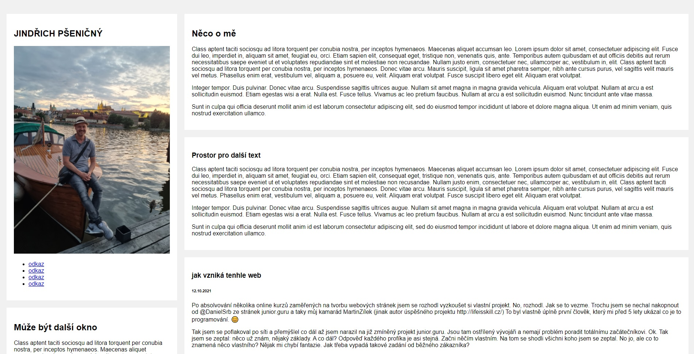

12.10.2021
Po absolvovánà několika online kurzů zaměřených na tvorbu webových stránek jsem se rozhodl vyzkoušet si vlastnà projekt. No, rozhodl. Jak se to vezme. Trochu jsem se nechal nakopnout od @DanielSrb ze stránek junior.guru a taky můj kamarád Henry ZÃlek (jinak autor úspěšného projektu lifeisskill.cz) To byl vlastně úplně prvnà Älověk, který mi před 5 lety ukázal co je to programovánÃ. 😊
Tak jsem se poflakoval po sÃti a přemýšlel co dál až jsem narazil na již zmÃněný projekt junior.guru. Jsou tam ostÅ™Ãlený vývojáři a nemajà problém poradit totálnÃmu začáteÄnÃkovi. Ok. Tak jsem se zeptal: něco už znám, nějaký základy. A co dál? Odpověď každého profÃka je asi stejná. PokraÄuj nÄ›ÄÃm vlastnÃm. Na tom se shodli všichni koho jsem se zeptal. No jo, ale co to znamená něco vlastnÃho? Nějak mi chybà fantazie. Jak třeba vypadá takové zadánà od běžného zákaznÃka?
„Usnadni si to a buÄ svůj zákaznÃk. Udělej si stránku sám o sobě“. Ha, ha… Těžšà zadánà si neumÃm představit. Vlastně je tÃm všechno na mě. Nikdo mi neřekne: hele, já chci aby to vypadalo tak a tak, aby to umělo tohle a támhleto atd.
Nejtěžšà je asi vymyslet základnà rozloženÃ, tzv. layout. Alespoň pro mě. Nejsem designer a hledám inspiraci u již existujÃcÃch webů s podobnou tématikou. Při prohlÞenà různých stránek mi všechny připadajà jako podle jedné šablony. Bez nápadu, bez energie a zaujetÃ. Jsem nováček a tak přemýšlÃm nad tÃm, jestli by se to dalo udělat i jinak. Ještě jsem na to nepřišel. Možná se tu nic moc nového vymyslet nedá? Každá stránka má plus mÃnus novinový layout. Rozhodně nebudu použÃvat žádný existujÃcà template. To mě nic nenauÄÃ. Rozhoduju se pro pro jeden boÄnà (levý) panel a dva horizontálnÃ. Takový formát klasickýho CV-ÃÄka. Možná si to rozmyslÃm a budu to chtÃt předělat. No, i tak se může vyvÃjet skuteÄná tvorba webu.